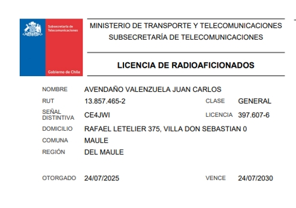

18 Agosto 2026

¡Buenas propagaciones, amigos!
¿Te ha pasado que escuchas las bandas, te encanta lo que oyes y quieres transmitir? Pues en Chile, como en casi todo el mundo, transmitir sin licencia es ilegal. Pero la buena noticia es que obtenerla es un proceso accesible y muy gratificante.
Hoy te cuento cómo es el camino hacia tu licencia de radioaficionado en Chile, de manera clara y sin vueltas burocráticas.
¿Por qué se necesita licencia?
El espectro radioeléctrico es un recurso finito y compartido. La radioafición, a diferencia de otros servicios, permite transmitir de forma libre entre operadores, por eso cada paÃs exige acreditar conocimientos técnicos y normativos antes de salir al aire. Es la garantÃa de que las bandas se usan con responsabilidad y respeto.
En Chile la entidad encargada es la SUBTEL (SubsecretarÃa de Telecomunicaciones). Ella otorga la licencia, asigna los indicativos y regula el uso de las bandas.
Los pasos del proceso
- 1. Estudiar: la teorÃa de la radioafición — reglamentación, electricidad, electrónica y propagación.
- 2. Rendir el examen: una prueba escrita que se toma de manera presencial o en lÃnea, según las disposiciones vigentes.
- 3. Aprobar: al superar el examen, se inicia el trámite de licencia ante SUBTEL.
- 4. Obtener la licencia: con tu licencia y tu indicativo asignado, ya puedes transmitir legalmente.
Las categorÃas y sus bandas
En Chile existen 4 categorÃas progresivas que amplÃan los privilegios: Aspirante, Novicio, General y Superior. La Aspirante es la primera licencia, la que obtienes al aprobar el examen, y te permite operar un grupo reducido de bandas. Al ascender a Novicio se desbloquean varias bandas adicionales, y asà sucesivamente hasta la categorÃa Superior, que accede a todas las bandas del servicio. A cada ascenso también crecen la potencia máxima y el ancho de banda autorizados.
| CategorÃa | Ideal para | Privilegios |
|---|---|---|
| Aspirante | La primera licencia tras aprobar el examen | Bandas HF de 80 m, 40 m y 10 m (solo estaciones fijas) y banda VHF de 2 m (fija o móvil) |
| Novicio | La segunda licencia, con bandas desbloqueadas | Bandas HF de 80 m, 40 m, 30 m y 10 m; bandas VHF de 6 m, 2 m y 220 MHz; bandas UHF de 70 cm, 23 cm, 13 cm y 5 cm |
| General | La mayorÃa de los aficionados | Mismas facultades que la categorÃa Superior: todas las bandas del servicio de aficionados |
| Superior | Operadores avanzados | Todas las bandas del servicio de aficionados y de aficionados por satélite, con la máxima potencia autorizada |
El indicativo: tu nombre en las bandas
Con la licencia recibes un indicativo (call sign): la combinación de letras y números que te identifica ante todo el mundo. En Chile los prefijos empiezan con CE (y otras letras autorizadas), seguidos de un número que indica la zona o región.
Por ejemplo, un indicativo como CE4JWI identifica al operador de la Región del Maule que está detrás de este blog. Ese distintivo es tuyo, te acompaña en cada QSO y es la base de tu reputación como radioaficionado.
Después de la licencia
Una vez al aire, el aprendizaje recién comienza. La radioafición es un hobby de por vida: cada banda tiene su personalidad, cada modo su técnica, y cada QSO te enseña algo nuevo. Y lo más valioso de todo: la comunidad de radioaficionados es de las más generosas que existen. Siempre hay un colega dispuesto a ayudarte a sintonizar tu primera antena.
¿Estás pensando en sacar tu licencia? ¿Ya eres radioaficionado y quieres compartir tu experiencia? ¡Déjalo en los comentarios y nos vemos en las bandas! 73.